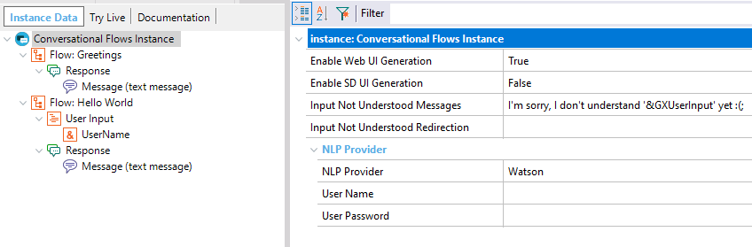
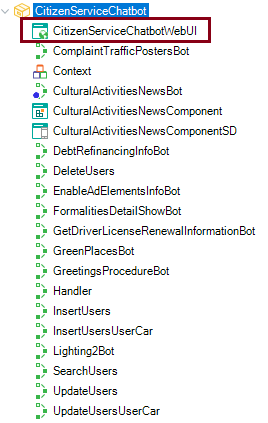
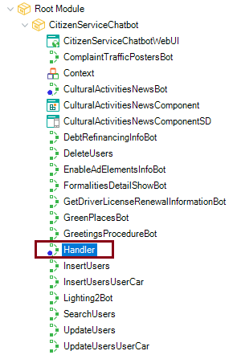
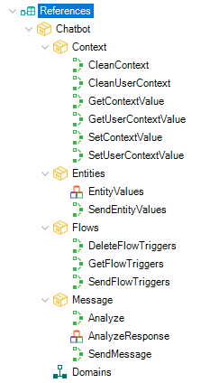

Chatbot generator
The purpose of the Chatbot generator is to automatically build and deploy a chatbot to any of the supported Chatbot providers. A Pattern called Conversational Flows exists under the Patterns node of the Preferences view in GeneXus.
(1) What do you have to do to create a chatbot?You have to define a Conversational Flows object to create your chatbot, and configure the least necessary settings: NLP Provider property and the Provider credentials depending on the AI provider you're using. See Configuring GeneXus for using the Chatbot Generator.  Then, define the Flow of a Conversational instance which set up the conversation. (2) What is generated by the pattern?To create a chatbot, you just need to design the model and the pattern will generate automatically all the objects needed to solve the conversation between the user and the AI provider. The purpose of the objects generated by the chatbot generator pattern is to digest the messages received from the user and build the query to be sent to the AI provider. Then, the response is handled through a handler and the result is shown to the user. The result can be a text message or a GeneXus object with a graphical interface. See Chatbots architecture. More specifically, when you select the Force Chatbot Generation menu option for the first time, a module is automatically created (you will have a module for each Conversational Flows object in the KB).  In the Build process, the objects are generated if it is needed so (if the chatbot instance has changed so it's needed to generate new objects). All the objects of the instance are generated in that case. (2.1) Generated objects of the PatternCallers of the UI objects: In particular, the <InstanceName>WebUI object is a Main Web Panel object which calls the "PanelChatWeb" object. Note: The way to call the PanelChatWeb or PanelChatSD is as follows.
CommonChatbots.PanelChatWeb(!"CitizenService") // The parameter is the instance name. Handler object: The handler is the service that is responsible for "routing" the user's query to the procedure that was generated to comply with the intent to which it corresponds. The Handler is executed after the query is sent to the provider so that it has the necessary data to know where to redirect. It's a generated object.  xxBot objects: These are the procedures to which the Handler "routes". They take the name of the Conversational Object of the bot, plus "bot". They are generated based on the defined flows. They know how to interpret the context to decide when they have to execute the conversational object associated with their flow (with the appropriate parameters). xxComponent & xxComponentSD: These are the automatically generated components for flows that have a component type response (for Web and SD). (2.2) Resources of the PatternAnother module, called CommonChatbots is created which contains all the pattern resources. In the Build process (only if the Conversational Flows instance has any change necessary to generate), and in the Generate Chatbot action, it is checked whether the resources have any change in comparison with the version of the resources that you have in the KB, and depending on the Keep Resources updated property, they are updated or not. In sum, the pattern generates some objects, which are included in the module of the instance, and there are other objects (resources) that are in the "CommonChatbots" module. The last can be modified as you desire, as they are updated only if you configure the pattern settings to do so (Keep Resources Updated property). (3) External Module used by the PatternThe pattern uses an external Module where the services which interact with the AI API are defined. It contains the necessary services to communicate with the different providers. The Chatbot module is automatically installed in the KB, when you create a Conversational Flows object. You can check if it's installed (and updated) going through the menu "Knowledge Manager > Manage Module References". It is automatically updated in the Build process and through the Generate Chatbot action when it's necessary to do it (when it isn't updated in the KB).  The module contents are those procedures and SDT's exposed to be used by the GeneXus user (e.g.:SendEntityValues) procedure. (4) How to generate your botSaving the instance: When you save the instance, the dialog is synchronized to the Provider to update the conversational model. The Chatbot generator generates a JSON file located under the model's directory: <KB_Directory>\Model\bot\. This JSON file is POST to the Provider, to create or update the Workspace. This is done when you save the instance, or when you execute the Synchronize Chatbot menu option.
Building: In the Build process, the pattern instance is refreshed (the objects are generated), if it's needed so. Generate Chatbot action: See Force Chatbot Generation menu option. (5) Connecting to the Chatbot ProviderThe connection to the Chatbot Provider is done using the credentials given (this depends on the Provider). An XML file called GXCF_Chatbots.config (it was called GXCF_<InstanceName>Chatbot.config prior to GeneXus 16 upgrade 7) is generated under the web directory, which contains the credentials to connect to the AI service at runtime. This file is generated when the instance is saved (or when you execute the Synchronize Chatbot menu option). It is also generated if it doesn't exist under the web directory when you build the application. In this case, Genexus doesn't connect to the AI Provider to check the credentials configured at the instance. Note: The following warning is displayed when the Chatbot provider's configuration is empty. Using DialogFlow: (6) RequirementsIn the case of Web Chatbots, check the Web Notifications and Progress UC requirements because Web notifications are used. The client does not wait for the server for a response, asynchronous calls are executed for a better user experience. |